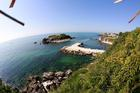
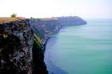
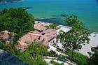
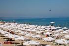
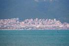
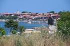

Bulgarian beaches
Bulgaria is a popular destination for summer holidays. Its seaside is long 378 km and includes thousands of beaches. That's what this site is all about - the beautiful Bulgarian beaches. Here you will find everything from beautiful virgin beaches to highly commercialized resorts. Unfortunately, the Bulgarian beaches are ruined by the reckless business. Many of the photos here will probably remain just memories...

Durankulak
Krapets (aka Krapec)
Shabla
Tulenovo
Kamen Bryag- 
Rusalka - 
Kaliakra 
Kavarna- 
Balchik 
Albena and Kranevo- 
Golden Sands 
Riviera
Konstantin and Elena
Evksinograd
Varna
Galata and Priboy
Kamchia
Shkorpilovtzi
Byala
Kara Dere (Karadere)
Obzor
Irakli and Emona
Elenite- 
Sveti Vlas 
Sunny Beach- 
Nesebar 
Ravda
Pomorie
Burgas
Gradina
Sozopol
Kavatzi and Smokinya
Duni
Ropotamo
Primorsko
International Youth Center - Primorsko
Kiten
Lozenetz
Arapya
Tsarevo
Varvara
Ahtopol
Sinemorets
Silistar
Rezovo